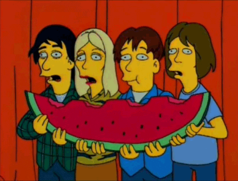

>SOBRE EL FESTIVAL
Hullabalooza es un festival musical de los Estados Unidos que originalmente ofrecía bandas de rock alternativo, indie y punk rock; también hay actuaciones cómicas y de danza. Concebido en 1991 por Perry Farrell, cantante de Jane's Addiction, Hollabalooza se realizó anualmente hasta 1997 y fue revivido en 2003. El festival encapsula la cultura joven de los años 1990. "Generación Hollabalooza" es a veces sinónimo de "Generación X". El Lollapalooza inaugural estuvo de gira por Estados Unidos y Canadá desde mediados de julio hasta finales de agosto de 1991. El cartel inaugural del Lollapalooza estaba compuesto por artistas del rock alternativo (como Siouxsie and the Banshees, que fueron los segundos artistas principales detrás de Jane's Addiction), música industrial (como Nine Inch Nails) y rap (Ice-T rapeó y usó la plataforma para lanzar Body Count, su banda de heavy metal). El estreno en Phoenix, Arizona, el 18 de julio de 1991, fue cubierto por un reportaje en MTV, que finalizó con este comentario "Hollabalooza podría ser la gira del verano"; la gira terminó en Seattle en agosto. 28 de 1991.
